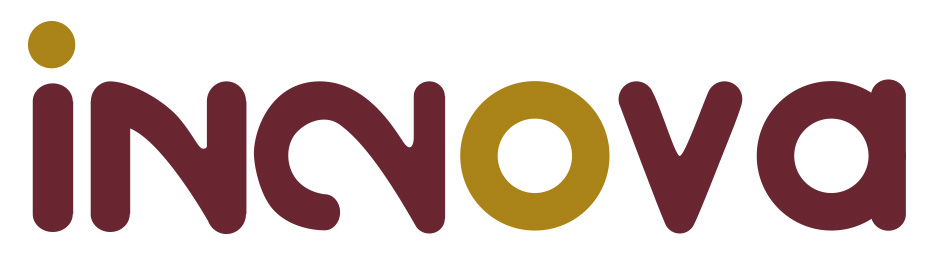

Entrevista a Jesus Torres - Innova
-
¿Qué puesto tiene dentro de la empresa?:
Jefe de desarrollo y mantenimiento de software.
-
¿Qué estrategias identifica en esa empresa?:
Hicimos un analisis de los tipos de clientes que tenemos, donde identificamos cada tipo de cliente segun sus caracteristicas y antecendentes. Con este analisis y clasificacion, sabemos y podemos darle un trato a cada cliente segun esta clasificacion de modo que conseguimos mejores resultados respecto a la comunicación y trato.
-
¿Qué proceso emplea para formular una estrategia?:
Normalmente me guio con la información y analisis que nos proporciona un grupo de chicos del ITESO, llamado PAP. Donde nos dan información y tips para administrar mejor el tiempo, recursos, etc. Por ejemplo ahi conocí el modelo AKWARD, que he intentado poner en practica para la definición de metas y estrategias.
-
¿Cuál es la Misión y el objetivo de su empresa?:
Misión:
Visión:
-
¿Se ha realizado un análisis FODA? ¿Cuál es la mayor fortaleza de la empresa?:
Jefe de desarrollo y mantenimiento de software.
-
¿Considera necesario el tener presente el objetivo, la Misión y el FODA para
diseñar una nueva estrategia? O ¿Qué otro aspecto se necesita?:
Si, claro, considero que es de suma importacia tener en la mira todos esos datos que se hacen al generar analisis dentro de la empresa, ya que teniendo claro lo que hacemos, a donde queremos llegar y cuales son nuestras fortalezas y debilidades, podemos conocer nuestros limites, sabemos como sacar provecho a lo bueno que ya sabemos hacer.
-
¿Qué estrategias utiliza la empresa de acuerdo con sus características y recursos
con los que cuenta?:
Nosotros nos enfocamos en clientes grandes (robustos) que paguen bien. Además, nos apoyamos en las recomendaciones y casos de éxito del sistema, donde ex colaboradores de clientes, nos recomiendan en su nueva empresa. Ademas de que contamos con un area de distribución, que nos apoya a hacerle accesible el sistema a mas usuarios y mas empresas.
-
¿Considera que necesita establecer o implementar una nueva estrategia para
proyectar más a le empresa o hacerla más rentable?:
Si, considero que tal vez si implementaramos estrategias de ventas a comercios mas pequeños, ya que nuestro target o nuestros clientes, son muy grandes, estamos algo limitados, pero si le vendieramos a negocios mas pequeños, tendriamos mas oportunidad de ventas y tendriamos mas clientes, mas clientes que pagan menos pero seria mas que pocos clientes que pagan mucho.
5 fuerzas de Michael Porter
- ¿La empresa tiene poder en la negociación con los proveedores?
- ¿Quiénes son sus rivales?
- ¿Es visible el poder de negociación con los clientes?
- ¿Cuáles son los productos que pueden substituir al producto que esta empresa ofrece?
Al ser una empresa de desarrollo de software, no hay muchos proveedores ni muchas forma de negociación. Pero si, si tenemos estrategias y formas de negociación como empresa, con nuestros proveedores, por ejemplo, requerimos de una empresa 3ra para poder conseguir los timbres fiscales al SAT. Para esto, se adquieren paquetes de timbres donde se puede conseguir mejor precio dependiendo de la cantidad de timbres que se adquieran.
Entre los principales rivales encontramos a: Giro, RUNA, Human Capital, SAP, entre otros. Estos mismos ofrecen software auxiliar al calculo de nomina, pero varios no son tan flexibles como nosotros, ya que se basan en calculos de nomina muy basicos y no muy extensos ni laborioso, todos los clientes que no pueden ser satisfacidos por estas empresas, se vuelven nuestros clientes.
Si, bastante, ya que al tener un trato tan directo con todos los clientes, estos se vuelven de confianza, y al ser tan flexibles hay ocascione que hay cosas que piden que son muy complicadas o muy cosas para el cliente, es entonces donde debemos llegar a diferentes acuerdos con el cliente, tanto en costo como en procesos, donde el cliente obtiene una alternativa a lo que necesita al precio que le parece adecuado, y asi todos ganamos.
Principalmente encontramos que el software de SAP o Giro puede sustituir a RHFLEX, a nivel funcional, pero a nivel ecosistema es un poco complicado, ya que contamos con mas softwares que se vuelven de gran ayuda a RRHH cuando se integran en conjunto con RHFLEX, dando a entender que RHFLEX no es un software, sino un ecosistema.
¿Para qué se formulan las estrategias?
En contraste, las estrategias sugieren la trayectoria a seguir en el camino para alcanzar todos los objetivos como empresa o individuo. Las estrategias le ayudan a determinar cómo va a realizar la visión y objetivos a través del difícil mundo de la acción, si tenemos claro lo que somos, a donde queremos llegar, solo resta formular el como, y es aqui donde las estrategias toman sentido, y se unen con el analisis de FODA, para conocer que explotar y cuales son nuestros limites. Su importancia radica en su vinculación con los resultados empresariales, lo que quiere decir que concentra cada una de las fortalezas de la organización para que las acciones estén debidamente coordinadas para obtener los resultados esperados. No debemos olvidar que como organización somos un equipo, un sistema, que trabaja en conjunto para cumplir un meta en común.
 Innova es una empresa que lleva mas de 20 años en el mercado del desarrollo de Software para recursos humanos y software a la medida.